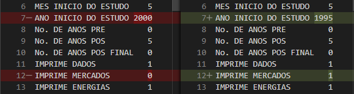
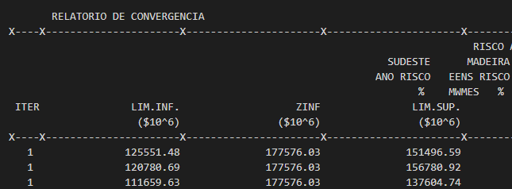
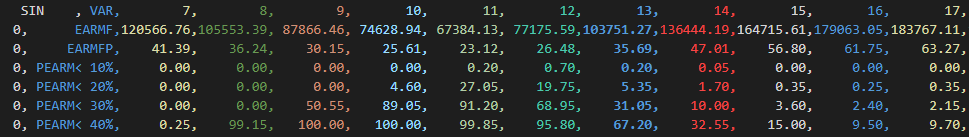

Tutorial
Este guia pode ser um bom ponto inicial para o uso do inewave. Como interface de desenvolvimento é recomendado
usar algum editor com um language server com um recurso de sugestões automáticas eficiente para Python, como o
VSCode com PyLance
ou a IDE específica PyCharm. As sugestões automáticas são essenciais para fazer uso de todo o potencial do
módulo inewave, além de auxiliar na escrita de códigos melhores.
Leitura, alteração e escrita do dger.dat
Seja um sistema de arquivos no qual, dentro de um diretório cujo caminho é:
$ pwd
$ /home/usuario/estudo/pmo_MM_AAAA/
E neste diretório exista um arquivo dger.dat, então o conteúdo deste pode ser lido
através do código:
>>> from inewave.newave.dger import DGer
>>> dger = DGer.le_arquivo("/home/usuario/estudo/pmo_MM_AAAA/")
É possível analisar todos os parâmetros existentes no arquivo dger.dat:
>>> dger.ano_inicio_estudo
1995
>>> dger.imprime_mercados
True
Se comparado com o conteúdo do arquivo dger.dat:

Como o dger.dat também é um arquivo de entrada para o NEWAVE, este também possui
um recurso de escrita, que pode ser usado na geração de novos decks.
>>> dger.ano_inicio_estudo = 2000
>>> dger.imprime_dados_mercados = False
>>> DGer.escreve_arquivo("/home/usuario/estudo/pmo_MM_AAAA/")
Ao visualizar as diferenças entre os arquivos:
{kind=link}
Para mais informações, basta consultar a referência do objeto DGer.
Realizando a leitura do pmo.dat
Seja um sistema de arquivos no qual, dentro de um diretório cujo caminho é:
$ pwd
$ /home/usuario/estudo/pmo_MM_AAAA/
E neste diretório exista um arquivo pmo.dat, então o conteúdo deste pode ser lido
através do código:
>>> from inewave.newave.pmo import PMO
>>> pmo = PMO.le_arquivo("/home/usuario/estudo/pmo_MM_AAAA/")
É então constrúido um objeto PMO, que fornece os dados do arquivo através de seus métodos:
>>> pmo.convergencia
Iteração Lim. Inf. ZINF ZINF Lim. Sup. ZINF ZSUP Delta ZINF ZSUP Iteração Tempo (s)
0 1 125551.48 177576.03 151496.59 138918.50 0.0 0.0 103.0
1 1 120780.69 177576.03 156780.92 138918.50 0.0 0.0 0.0
2 1 111659.63 177576.03 137604.74 125026.65 0.0 0.0 0.0
3 2 125551.48 321359.37 151496.59 138918.50 0.0 0.0 122.0
4 2 120780.69 321359.37 156780.92 138918.50 0.0 0.0 0.0
.. ... ... ... ... ... ... ... ...
91 31 74025.15 348963.75 88058.94 81322.01 0.0 0.0 0.0
92 31 67603.11 348963.75 78384.09 73189.81 0.0 0.0 0.0
93 32 75735.31 349073.00 86516.29 81322.01 0.0 0.0 277.0
94 32 74025.15 349073.00 88058.94 81322.01 0.0 0.0 0.0
95 32 67603.11 349073.00 78384.09 73189.81 0.0 0.0 0.0
Os dados extraídos pelo módulo encontram-se na respectiva tabela do arquivo:
{kind=link}
Maiores detalhes podem ser obtidos na referência do objeto PMO.
Realizando a leitura do earmfpm00x.out
Seja um sistema de arquivos no qual, dentro de um diretório cujo caminho é:
$ pwd
$ /home/usuario/estudo/pmo_MM_AAAA/
E neste diretório exista um arquivo earmfpm001.out, então o conteúdo deste pode ser lido
através do código:
>>> from inewave.nwlistop.earmfpm00 import EarmfpM00
>>> earm = EarmfpM00.le_arquivo("/home/usuario/estudo/pmo_MM_AAAA/", "earmfpm001.out")
É então constrúido um objeto EarmfpM00, que fornece os dados do arquivo através de seus métodos:
>>> earm
<inewave.nwlistop.earmfpm00.EarmfpM00 object at 0x0000020BF6FB7F40>
>>> earm.energias
Ano Série Janeiro Fevereiro Março Abril Maio Junho Julho Agosto Setembro Outubro Novembro Dezembro Média
0 2021 1 0.0 0.0 0.0 0.0 0.0 0.0 27.5 23.4 18.5 14.3 13.2 13.3 18.4
1 2021 2 0.0 0.0 0.0 0.0 0.0 0.0 24.5 19.1 16.1 12.3 10.4 10.7 15.5
2 2021 3 0.0 0.0 0.0 0.0 0.0 0.0 25.1 24.7 21.3 13.3 14.3 19.6 19.7
3 2021 4 0.0 0.0 0.0 0.0 0.0 0.0 27.3 23.2 18.9 14.3 12.4 16.5 18.8
4 2021 5 0.0 0.0 0.0 0.0 0.0 0.0 23.5 20.6 14.2 10.7 9.4 22.0 16.7
... ... ... ... ... ... ... ... ... ... ... ... ... ... ... ...
9995 2025 1996 90.7 93.2 96.5 97.1 98.6 98.6 94.4 89.5 81.1 66.2 60.6 58.7 85.4
9996 2025 1997 67.8 76.2 84.1 88.6 93.8 95.7 92.7 86.1 76.1 63.3 59.7 63.2 78.9
9997 2025 1998 72.1 80.2 87.6 94.4 97.3 96.7 91.9 81.6 70.9 58.8 49.0 51.6 77.7
9998 2025 1999 88.7 91.5 88.2 92.2 89.8 83.0 81.3 70.9 58.8 44.6 41.8 53.1 73.7
9999 2025 2000 90.6 93.2 96.4 99.1 98.5 93.9 87.0 79.6 67.6 63.0 66.4 77.7 84.4
[10000 rows x 15 columns]
Os dados extraídos pelo módulo encontram-se no arquivo:

Para maiores informações, basta consultar a referência Earmfpm00.
Realizando a leitura do MEDIAS-SIN.CSV
Seja um sistema de arquivos no qual, dentro de um diretório cujo caminho é:
$ pwd
$ /home/usuario/estudo/pmo_MM_AAAA/
E neste diretório exista um arquivo MEDIAS-SIN.CSV, então o conteúdo deste pode ser lido
através do código:
>>> from inewave.nwlistop.mediassin import MediasSIN
>>> medias = MediasSIN.le_arquivo("/home/usuario/estudo/pmo_MM_AAAA/")
É então constrúido um objeto MediasSIN, que fornece os dados do arquivo através de seus métodos:
>>> medias
<inewave.nwlistop.mediassin.MediasSIN object at 0x00000166A7B59370>
>>> meidas.energias_armazenadas_absolutas
[220084.42 233433.78 240735.14 241453.06 235079.45 222240.84 207280.77
196712.95 189801.23 194836.73 212676.14 229302.66 244305.27 254792.92
259826.38 259259.97 252486.23 238415.73 221549.73 208798.81 200677.28
205599.06 222007.42 237158.7 249949.94 259642.58 264656.34 263249.5
255866.48 241392.38 224162.03 210948.72 202249.97 205928.23 222097.14
237495.98 251485.92 261095.86 265716.56 263798.31 256055.05 240889.86
223191.25 208994.06 198852.64 202126.69]
Os dados extraídos pelo módulo encontram-se no arquivo:
{kind=link}
Para maiores informações, basta consultar a referência MediasSIN.